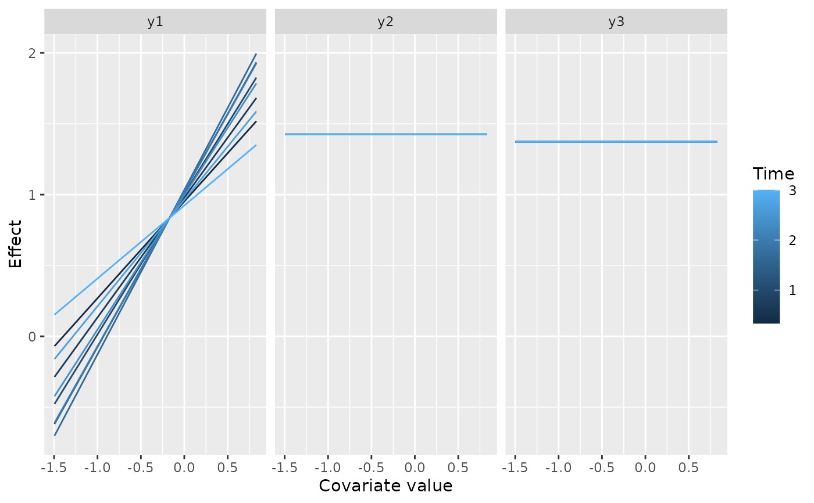

Compute partial effect surfaces for one or more covariates of a
BoostMLR fit, in a form gg_boost_effect accepts.
Arguments
- object
A
BoostMLRgrow object, as returned byBoostMLR::BoostMLR().- xvar.names
Character vector of covariate names. Defaults to every covariate in the fit.
- ...
Passed to
BoostMLR::partial.BoostMLR(), for examplen.x,n.tmorMopt.
Value
A boostmlr_partial object: a list with elements curves (one
partial.BoostMLR() result per covariate, named by covariate),
x.var.names and response.labels.
Details
BoostMLR::partial.BoostMLR() takes one covariate per call and returns a
bare list with neither the covariate's name nor the responses' names, so
it cannot be told apart from any other list. This wrapper calls it once per
covariate with plotting switched off, and records the covariate names and
the fit's response names (y_Names) alongside the results. It is the
BoostMLR counterpart of boostmtree::partial.plot(output = "data").
Each result holds the raw partial effect (pList) and a lowess smooth of
it over time (sList), as covariate-by-time matrices, one per response.
gg_boost_effect extracts the smooth.
Examples
# \donttest{
if (requireNamespace("BoostMLR", quietly = TRUE)) {
sim <- BoostMLR::simLong(
n = 20, N = 3, rho = 0.8, model = 1, q_x = 2, q_y = 0
)$dtaL
fit <- BoostMLR::BoostMLR(
x = sim$features, tm = sim$time, id = sim$id, y = sim$y,
M = 50, Verbose = FALSE
)
plot(gg_boost_effect(boostmlr_partial(fit, "x1")))
}

# }